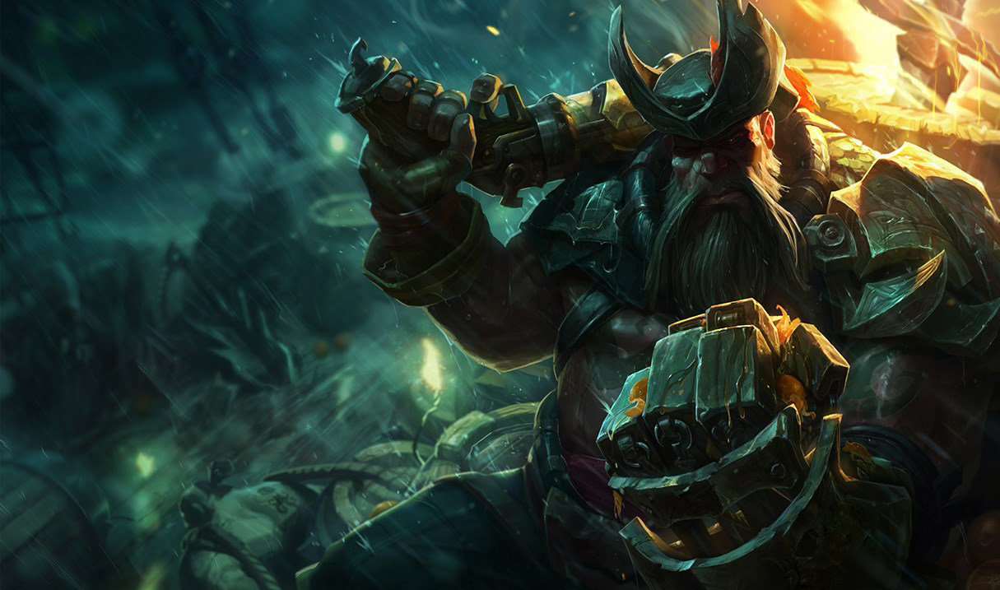

A movie I watched recently is called Dead Poets Society. It was directed by Peter Weir and was released in 1989.
I chose to watch this movie because I knew the setting took place in autumn, which is fitting for the current time.
In October, I try to watch as many movies that are horror or set in autumn for good seasonal vibes. The movie is about a high-school poetry teacher who has a powerful impact on his students.
He changes their perspectives or ways of thinking in many ways. Robin Williams is notable for acting as the teacher in this movie. I had a lot of fun watching it mainly for this reason.
Robin Williams has a kind of aura that can't be replicated. Even though he was acting, it really did seem like he could be a poetry teacher who encourages out-of-the-box thinking and shows care
for his students. The movie does get sad at the end, though, because one of the student's fathers is trying to prevent him from chasing his dream, which results in his suicide. I decided
to give the movie a 4/5. Part of the reasoning for this rating comes from the fact that the ending felt very abrupt for me.
Top 3 Movies
My Top 3 Movies
Movie Title
Release Year
Genre
Spider-Man: Across the Spider-Verse
2023
Animation
Hereditary
2018
Horror
Trainspotting
1996
Crime
My Experience Playing Gangplank from League of Legends
by
Tristan Stuk

Gangplank from League of Legends
Gangplank is a character from a game called League of Legends. In League of Legends, players fight in three separate lanes.
There is a top, middle, and bottom lane. There is also a jungle for players not playing in a lane. Gangplank is a top laner and goes against one other top laner in a game.
I recently chose Gangplank to be the character I play most. I might have to put the character down, though, because he is extremely mechanically challenging.
I wanted to choose a character to play repeatedly over a large number of games because it's said that it can help you win more games due to the consistency.
The reason I chose Gangplank in particular is because I knew he was challenging. This way, I would not get bored of the character due to there being so many mechanical intricacies to learn.
While I do have good games with the character, it feels like I fall short too often. This is getting frustrating even though I have been consistently practicing the character
more than anyone I ever have before. Part of the reason he is so mechanically challenging is the precise mouse movements and timing his abilities require.